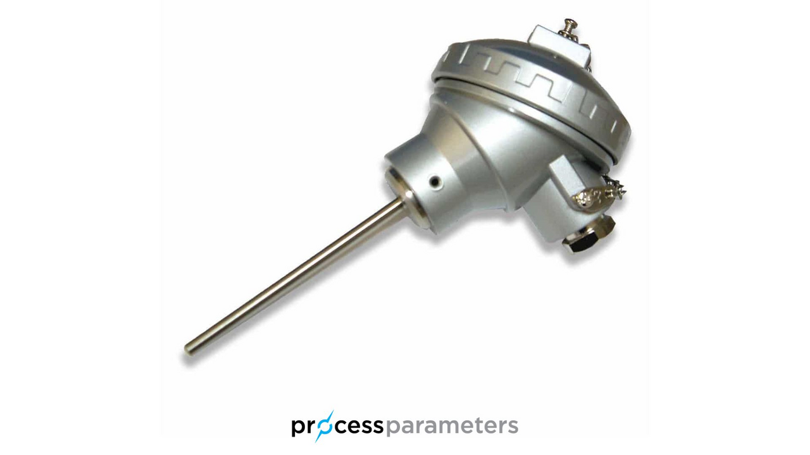
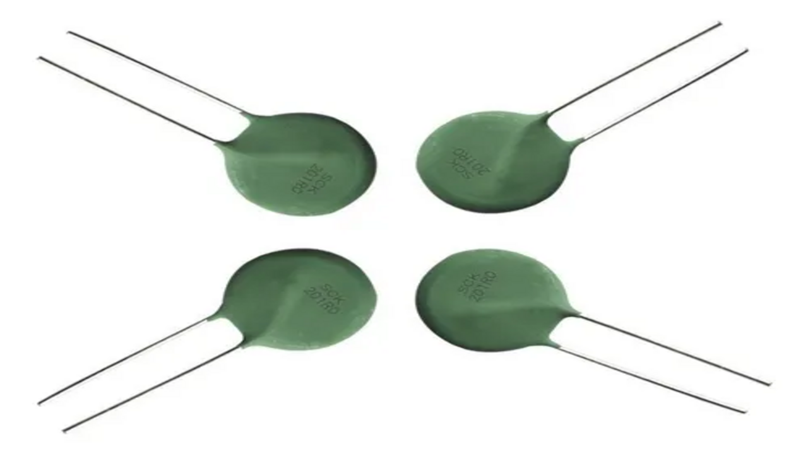
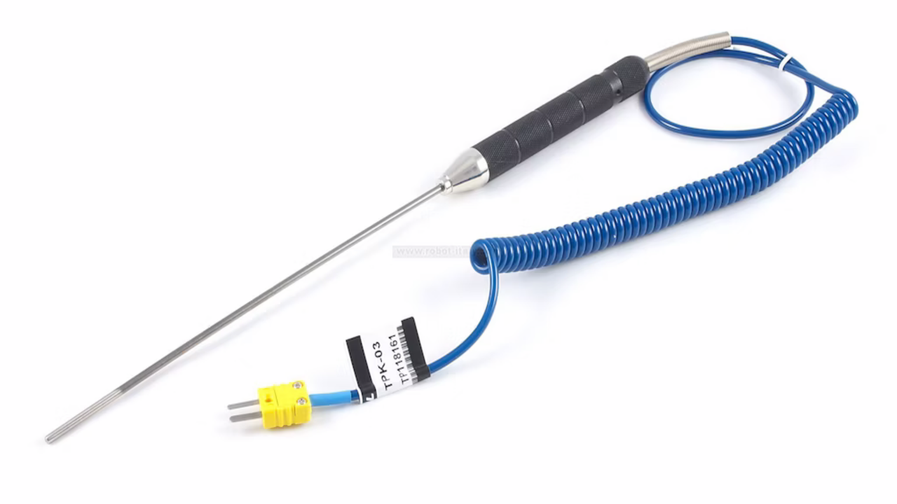
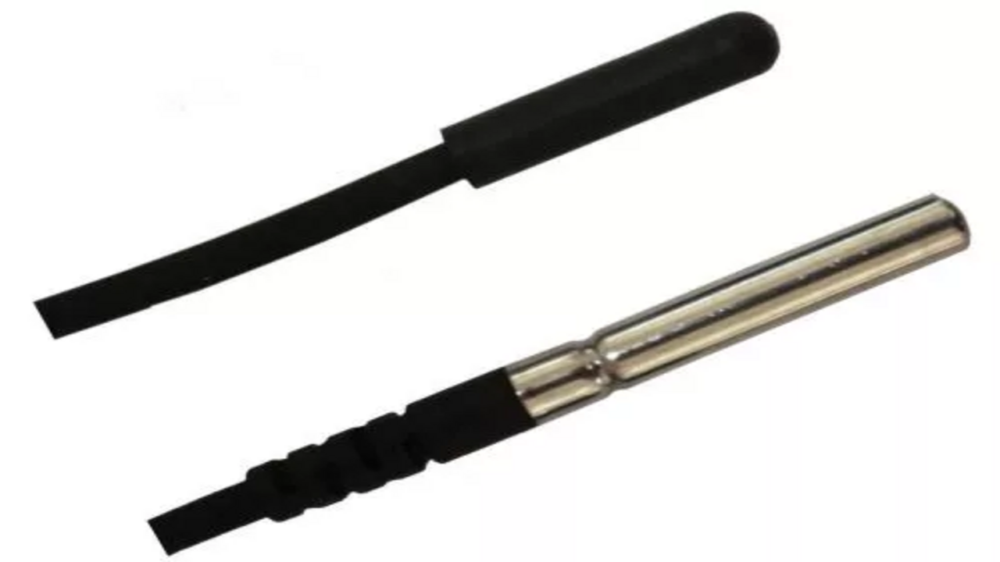
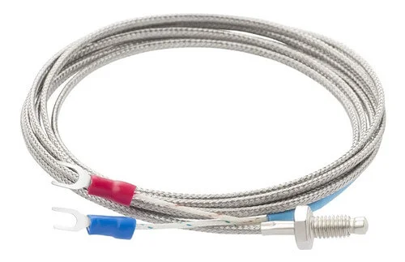
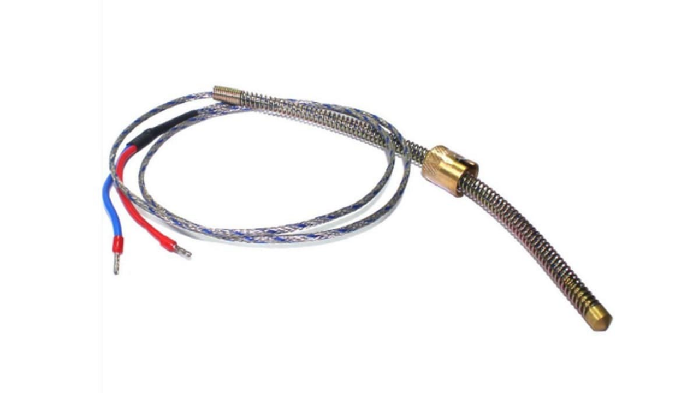
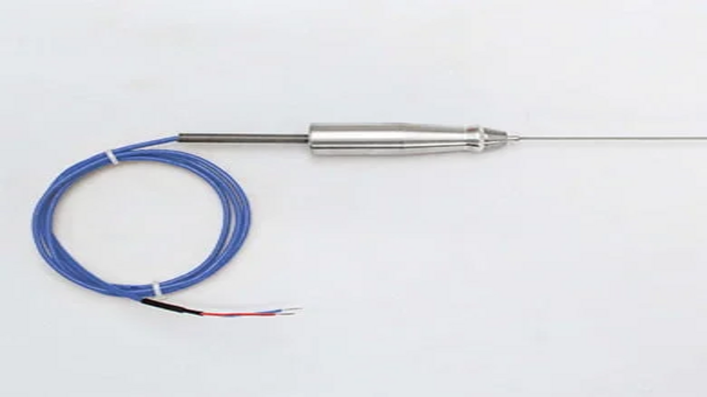
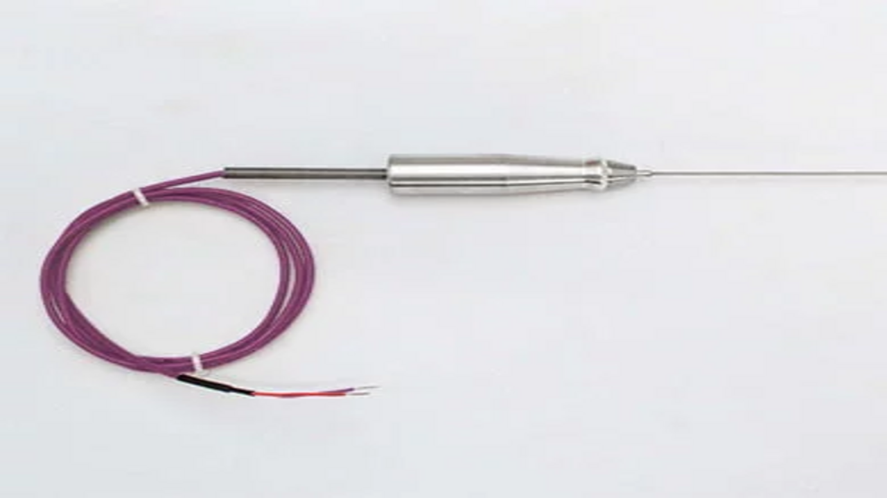
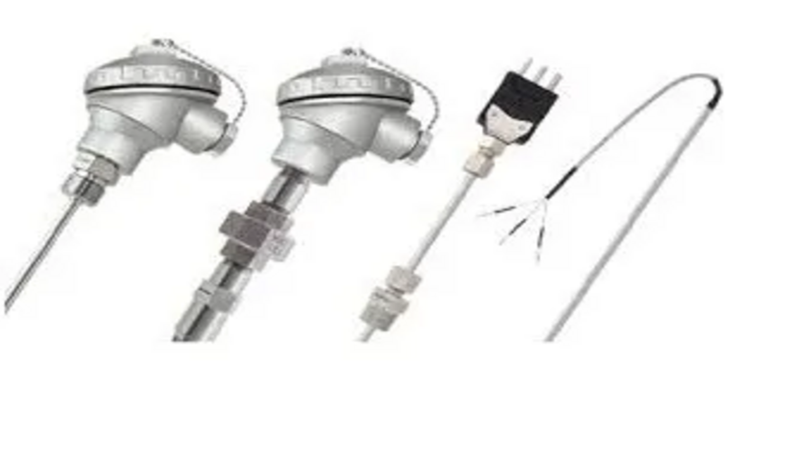
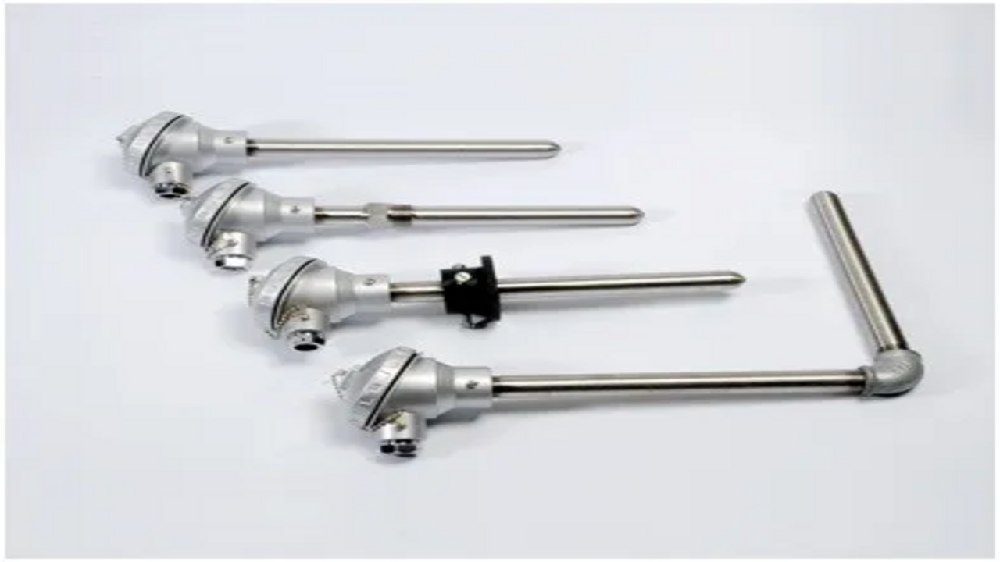

Sensor
Sensor é um dispositivo capaz de detectar uma grandeza física e convertê-la em um sinal que pode ser medido ou processado.
Sensor é um dispositivo capaz de detectar uma grandeza física e convertê-la em um sinal que pode ser medido ou processado.
Os sensores de temperatura analógicos transformam a variação de temperatura em um sinal elétrico contínuo, como tensão ou resistência.

O RTD é um sensor que mede temperatura pela variação da resistência elétrica de um metal.

O Termistor é um sensor que mede temperatura pela mudança da resistência elétrica de um material semicondutor.

O Termopar é um sensor que mede temperatura gerando uma pequena tensão elétrica a partir da junção de dois metais diferentes.
O sensor NTC (Coeficiente de Temperatura Negativo) é um tipo de termistor cuja resistência elétrica diminui à medida que a temperatura aumenta. O NTC é possui boa sensibilidade, resposta rápida e baixo custo, sendo ideal para aplicações que exigem monitoramento térmico simples e eficiente.

O NTC é um tipo de termistor cuja resistência elétrica diminui à medida que a temperatura aumenta.
O sensor Termopar Tipo K é um dispositivo de medição de temperatura formado pela junção de dois metais diferentes, geralmente níquel-cromo e níquel-alumínio. Quando essa junção é submetida a variações de temperatura, é gerada uma pequena tensão elétrica proporcional ao valor térmico medido. O Termopar Tipo K é utilizado para monitoramento térmico em fornos, caldeiras e processos industriais, entre outros.

O Termopar Tipo K é um sensor que mede temperatura usando a junção de dois metais diferentes, oferecendo ampla faixa de medição e resistência a altas temperaturas.
Os termopares são sensores de temperatura formados pela junção de dois metais diferentes, que geram uma pequena tensão elétrica quando submetidos a variações térmicas. Existem diversos tipos, classificados conforme os metais utilizados em sua composição.

Sensor que mede temperatura em faixas moderadas com metais ferro e constantan.

Sensor preciso para baixas temperaturas, feito de cobre e constantan.

Sensor sensível, feito de níquel-cromo e constantan, para medições detalhadas.

Sensor estável em altas temperaturas, composto por níquel e níquel-cromo-silício.

Sensor para temperaturas muito altas, feito de platina e ródio, usado em processos industriais.
O primeiro ponto a observar é a escala de temperatura que será medida, garantindo que o sensor suporte os valores mínimos e máximos do processo. Também é importante considerar o nível de precisão desejado, o ambiente de uso e o tipo de sinal de saída do sensor. Ex: "Não se pode medir um pedaço de carne de açougue em uma balança para medir toneladas".